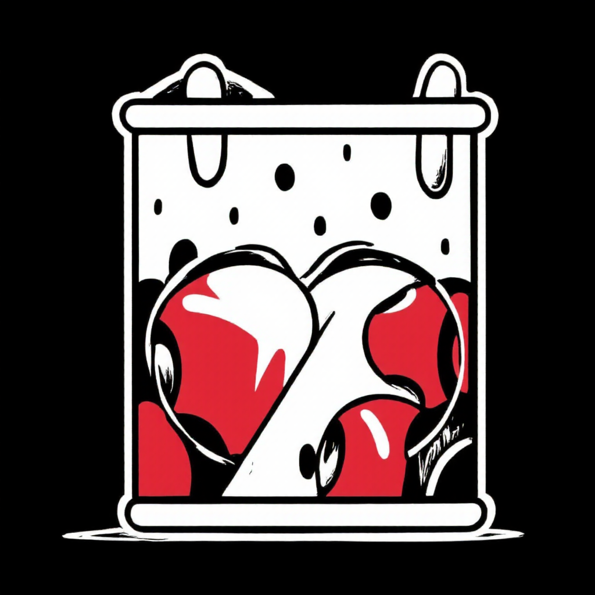
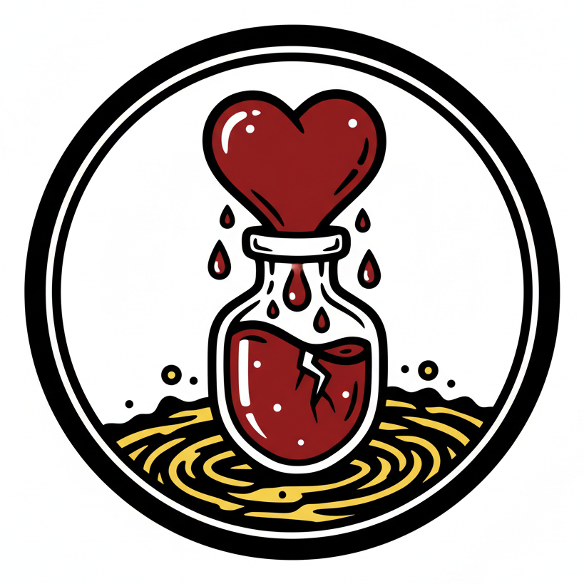

Hey there! I'm Agung Budi (b4n9z), a passionate developer focused on pushing the envelope of Minecraft PVP and Survival mechanics on Bukkit, Spigot, and Paper. My driving force isn't just writing lines of code; it's the thrill of designing and implementing entirely new game mechanics that are stable, engaging, and genuinely fun. I specialize in turning ambitious conceptual ideas into polished server-side reality. This portfolio showcases my commitment to imaginative design and high-quality Plugin Minecraft Java development within the server ecosystem.
What truly sets my work apart is the relentless focus on flexibility and customization. My ultimate goal for every plugin is to ensure that server owners have the power to tailor every aspect of the new mechanic, making it perfectly fit their unique server environment. This strong creative drive and dedication to user-centric design is what defines my projects. I'm always eager to connect with fellow enthusiasts, contribute to innovative ideas, and explore new ways to enrich the server experience. If you’re looking for a developer who can transform a bold concept into a dynamic, highly-configurable reality, feel free to reach out!
Designing and implementing complex, server-side game mechanics for the Bukkit, Spigot, and Paper platforms. This service goes beyond simple configuration; it involves creating entirely new PVP and Survival systems that require deep architectural understanding of Java and the Minecraft ecosystem to ensure stability and seamless integration.
Developing plugins with a strong focus on user-centric design and high configurability. Every feature is architected to be easily customizable by server administrators, ensuring maximum adaptability to various server needs and allowing owners full control over gameplay tuning and balance without altering the core code.
Ensuring the developed features are not only powerful but also highly optimized for server performance. This involves writing clean, efficient Java code, rigorous testing to prevent latency issues, and implementing best practices to guarantee long-term stability across different versions of the Minecraft server software.
Core Survival Mechanic

A Dynamic Health Modification System
Project Overview: DeathPulse is a powerful Minecraft plugin designed to fundamentally enhance survival and PVP gameplay by implementing a dynamic health modification mechanic upon player death. Server administrators can configure player health to be gained or lost specifically based on the type of death the player experiences, introducing a unique and challenging risk/reward system to the server.
Advanced Features & Customization: The flexibility of DeathPulse is its core strength. Beyond granular configuration for various death types, the plugin includes a fully custom Health Item System, allowing players to actively manage their maximum health through a configurable in-game item. It also provides comprehensive administrative commands for advanced control, including health matching, transferring, and configuration reloading, ensuring server owners have total mastery over this complex survival mechanic.
Advanced Combat & Store Mechanic

Configurable Effect & Max Health Shop
Project Overview: VitalVials is a groundbreaking plugin that introduces a Health-Based Economy to Minecraft. It transforms maximum player health or current health points into a valuable, dynamic currency, allowing players to strategically trade their vitality for powerful, temporary effects. This system forces players to constantly weigh the risk of reduced health against the immediate combat advantage of the purchased effects.
Extreme Customization & Technical Depth: True to my design philosophy, VitalVials is fully configurable down to the smallest detail. Server owners can customize every effect, cost, and mechanic. The system features advanced configuration to control effect activation based on the item held and the player's action (e.g., right-click, left-click, hitting an enemy, or being hit). Furthermore, the plugin includes a dynamic, player-specific Scoreboard for real-time effect tracking and a robust Cooldown System to maintain game balance.